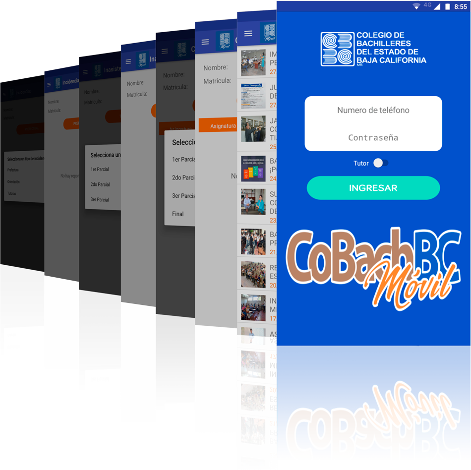

La aplicación móvil oficial para darle seguimiento a los estudiantes del Colegio de Bachilleres del Estado de Baja California. Disponible para Android en la Play Store

Calificaciones
Los resultados parciales y finales estarán disponibles al ser dados de alta por los docentes.
Inasistencias
Cada día podrás verificar las asistencias y faltas por clase directamente en tu celular.
Incidencias
Accede a cualquier reporte generado por las áreas de prefectura, orientación o tutorías.
Noticias
Manténte al día con las útlimas noticias que se generan al interior de CoBach BC.
¿Necesitas ayuda?
Encunetra las respuestas a las preguntas más comunes sobre el uso de CoBach BC Móvil.
¿Qué necesito para usar la app?
Son dos tipos de requerimientos, primero los técnicos: necesitas un celular con el sistema operativo Android al menos en su versión 4.4.